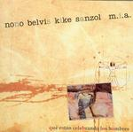

Home Artist links Label link

Nono Belvis Kike Sanzol M.I.A. - Que Estan Celebrando Los Hombres
| Artist: | Nono Belvis Kike Sanzol M.I.A. |
| Title: | Que Estan Celebrando Los Hombres |
| Label: | Viajero Inmovil CICL03014VIR |
| Length(s): | 49 minutes |
| Year(s) of release: | 1982 |
| Month of review: | [07/2004] |
Line up
Nono Belvis - guitars, voice
Kike Sanzol - drums, percussion
Tracks
| 1) | Lazos Reales | 5.47
|
| 2) | Blanca Presencia | 3.56
|
| 3) | Al Acecho | 8.07
|
| 4) | Una Especie De Hueco | 5.48
|
| 5) | Lengua De Gato | 3.54
|
| 6) | Cucu | 2.44
|
| 7) | Que Estan Celebrando Los Hombres | 6.11
|
| 8) | Minimo De Quietud | 6.32
|
| 9) | Rumba Rumbe | 5.43
|
Summary
The music
A guitar player and a percussionist, the people who recorded this album in
1982. The former clearly is the most influential of the duo. Even though
percussion does come to the fore at times, this music is pretty much guitar
music. The first side of the original LP (tracks 1 to 3) are acoustic
guitars played in a flamengo sort of style, similar to Paco DeLucia. This
completely changes with side two, which is pretty experimental, led by
electric guitars played progressively experimental, to the point of Hendryx
like sounds. In between there is some more laid back material, that's
completely unlike the two other styles mentioned.
The bonus material, tracks 8 and 9, most closely fit with the first set of
tracks, with a lot of acoustic guitar and xylo- or vibraphone.
Conclusion
This is a record with multiple faces. It has the gentle Lucia mode guitar
jazz. But also the Hendryx type distortion from a more jazz oriented
perspective. Where the record at the start promises to become a bit of a
boring event, we are presented with more variety than we would expect.
Despite this, the record sounds together enough. Definitely one of the more
interesting re-releases on the Viajero Inmovil label.
© Roberto Lambooy